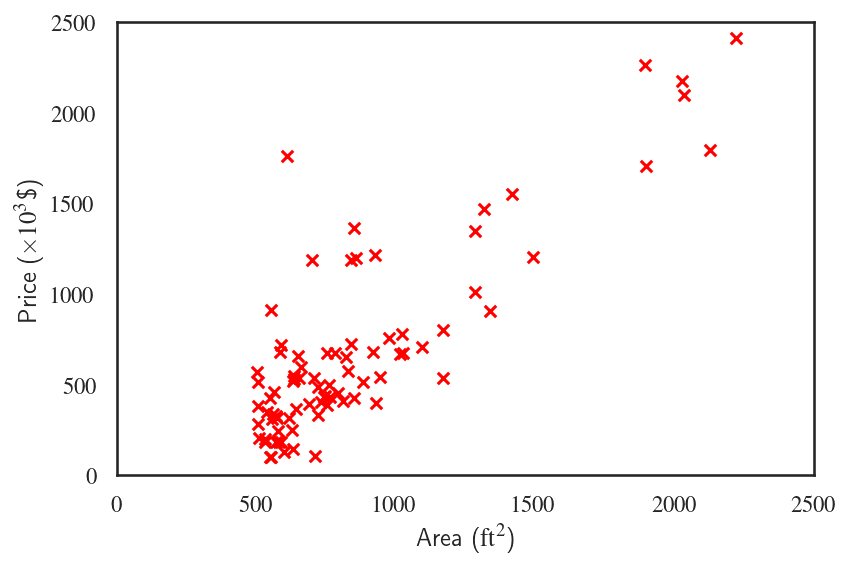
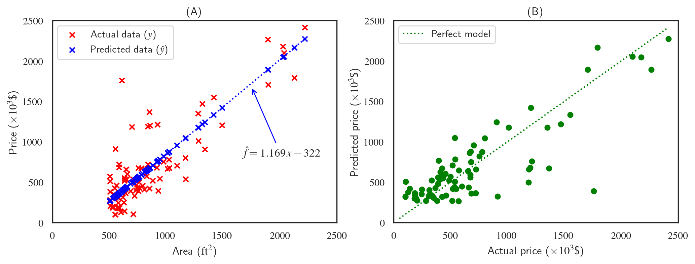

Parametric Machine Learning Models
One of the main differences between the machine learning algorithms as we pointed out in Introduction is about the assumptions that they make about the mapping function $\hat{f}$. The model/function $\hat{f}$ maps the input variables/features $X$ to the outcome $y$ as $$ y=\hat{f}(X) $$ Those algorithms that assume a certain functional form for the mapping are called parameteric algorithms and the ones that do not make such assumptions are called non-parameteric algorithms.
Parameteric Models
Parameteric models make a simplifying assumption about the relationship between the data features and outcome, ususally in the form of linear combination of the input variables. For example, a simple linear regression model to predict housing prices using the house area makes the assumption that $$ \text{Price}=\theta_0 + \theta_1\,\times\,\text{Area}, $$ meaning that the predicted house prices $\hat{y}$ are going to be a linear function of the house areas $X$ $$ \hat{y}=\hat{f}(X). $$

Linear regression can be used to find the unknown coefficents $\theta_0$ and $\theta_1$ using gradient descent or least squares method. The resulting model predictions will look like
We can see the consequences of the strong assumption that we made. The linear model doesn't do a great job of prediction the house prices. The two figures above are two different ways that we can demonstrate the accuracy of the simple linear regression model. Figure (A) presents the model predictions and the actual data plotted against the house area, the single feature that the model was trained against. The model predictions take the form $ax+b$ which was the assumption that the model was built upon, and the coefficients $\theta_0$ and $\theta_1$ turn out to be $1.169$ and $-322$, respectively. Figure (B) looks at these predictions differently by plotting them against the actual prices which makes it easy to asses the accuracy of the model. The dotted green line shows the line $x=y$, i.e., what would have been a perfect model.
Concluding Remarks, Cons, and Pros
Linear regression, logistic regression, and linear discriminant functions are some of the most widely used parameteric machine learning algorithms. Parameteric algorithms do not require a lot of data to train. 100 or 100000 data points doesn't make a difference once the form of the function has been set. The model will still have the same number of parameters.
Parameteric models are simple to interpret and extremely efficient (very fast) because the model doesn't spend any time figuring out the form of the mapping function. The problem is that in most cases, the unknown mapping does not have a linear form, meaning that making any assumption about the relationship between the output and input variables is just wrong! That makes the parameteric algorithms limited to simple problems.
Next, We'll take a look at non-parameteric techniques and learn about the assumptions they make, their advantages and disadvantages, and the machine learning algorithms that adopt them.